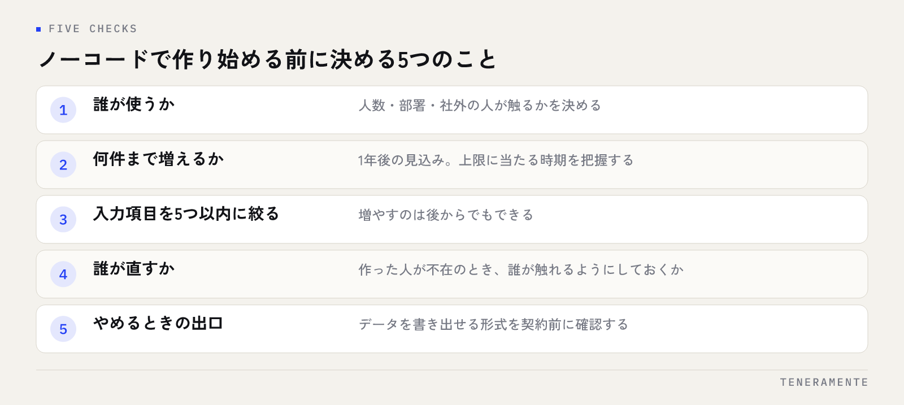

ノーコードのツールが増えたことで、業務アプリを自分たちで作るという選択肢が現実的になりました。ノーコードで業務アプリは作れます。ただし「どこまで作るか」を決めずに始めると、途中で動かなくなります。向いている範囲と、限界が来る場面を先に知っておくと、作り直しを避けられます。
📌 この記事の結論
ノーコードが向くのは、使う人が少なく、業務のルールが単純で、止まっても業務が回る範囲です。限界が来るのは、他システムとの連携・件数の増加・権限の細かさ・業務ルールの例外が絡んだとき。小さく作って限界を確かめ、越えた部分だけを作り替えるのが現実的な進め方です。
01ノーコードで業務アプリは、どこまで作れるのか
ノーコード（No-Code）は、コードを書かずに画面上の操作でアプリを組み立てる仕組みです。入力フォーム、一覧表、検索、集計、通知。この4つの組み合わせで済む業務であれば、多くの場合そのまま形になります。
具体的には、日報や作業報告の提出、備品や在庫の管理、問い合わせの受付と担当者への振り分け、案件の進捗を一覧で見る台帳。こうした「記録して、探して、集計する」業務はノーコードの得意な範囲です。Excelで管理していたものを、複数人で同時に見られるようにする用途とも相性がよいと言えます。
逆に、業務の途中で複雑な計算や判断が入るもの、外部のサービスとデータをやり取りするものは、作れたとしても手間が急に増えます。この境目がどこにあるかを、次に見ていきます。
02ノーコードが向くのは、この3つのケース
ひとつ目は、使う人が10名に満たない範囲で、部署をまたがない業務です。同じ部署の中で完結していれば、権限の設計が単純で済み、運用ルールも口頭で揃えられます。
ふたつ目は、業務のやり方がまだ固まっていない業務です。何を記録すべきか決まっていない段階で本格的に開発すると、作り終えた頃には項目が合わなくなります。ノーコードは項目の追加・削除がその場でできるため、試しながら形を決める用途に向きます。
みっつ目は、止まっても別の手段で回せる業務です。社内の備品管理や会議室の予約は、仮に使えなくなっても紙やチャットで代替できます。一方、請求や入金のように止められない業務は、別の判断基準が必要になります。内製と外注のどちらで進めるかは業務アプリの内製と外注の判断にまとめています。
「試作」としてのノーコードは効く
本番運用を前提にせず、必要な項目と画面の並びを確かめる道具として使う方法もあります。2週間ほど実際に入力してみると、使わない項目と足りない項目がはっきりします。この結果を持って開発の相談をすると、要件のすり合わせが短く済みます。
03限界が来るのは、この4つの場面
ノーコードで作った業務アプリが行き詰まるとき、原因はだいたい次の4つのどれかです。
他システムとの連携が必要になったときが最も多い場面です。会計ソフトや基幹システムとデータをやり取りしようとすると、ツールが用意した連携先に無い限り手作業でのファイル受け渡しが残ります。結局そこが手間の中心になります。
件数が増えたときも限界が見えます。数百件までは快適に動いていた一覧が、数千件を超えると表示に時間がかかるようになる。ツールごとに上限や課金の区切りがあるため、増え方の見込みは最初に確認が要ります。
権限を細かく分けたいときも難所です。「自分の担当分だけ見せる」「金額だけ一部の人に隠す」といった要求は、ツールの権限機能の粒度に左右されます。
業務ルールに例外が多いときは、画面の操作だけで表現しきれなくなります。例外のたびに項目や分岐が増え、作った本人しか触れないアプリになっていきます。
04ノーコードと、開発を依頼する場合の違い
同じ「業務アプリを用意する」でも、進み方と抱えるものが変わります。
| ノーコードで自作 | 開発を依頼する | |
|---|---|---|
| 作り始めるまで | すぐ着手できる | 要件の整理から始まる |
| 初期の費用 | ツールの利用料が中心 | 設計・開発の費用がかかる |
| 変更のしやすさ | 自分たちですぐ直せる | 依頼と確認の手順が要る |
| 連携・例外処理 | ツールの範囲に収まる場合のみ | 業務に合わせて作れる |
| 属人化のリスク | 作った人に依存しやすい | 仕様が形に残る |
| 向く段階 | やり方が固まっていない時期 | 運用が決まり、止められない時期 |
どちらが優れているという話ではありません。業務がどの段階にあるかで、合う方が変わります。やり方が定まっていない段階で作り込むと無駄が出ますし、逆に止められない業務を自作のまま抱えると、担当者が異動した時点で誰も直せなくなります。
05作り始める前に決めておく5つのこと
ノーコードで失敗する場合、ツールの選定より前の段階で決め忘れていることがほとんどです。

- 誰が使うか（人数・部署・社外の人が触るか）
- 何件まで増えるか（1年後の見込み。上限に当たる時期を把握する）
- 入力する項目を5つ以内に絞る（増やすのは後からでもできる）
- 誰が直すか（作った人が不在のとき、誰が触れるようにしておくか）
- やめるときの出口（データを書き出せる形式を確認しておく）
5つ目は見落とされがちですが、最も重要です。データを取り出せないツールを選ぶと、限界が来たときに移行できません。契約前にエクスポートの可否と形式を必ず確認してください。
06つまずきやすいところと、乗り換えの判断
よくある3つの失敗
既存のExcelと並行して運用してしまうのが最も多い失敗です。二重入力になり、どちらの数字も信用できなくなります。次に多いのが、項目を最初から細かくしすぎて誰も入力しなくなるケース。そして、作った本人しか構造を理解しておらず、その人が異動した時点で修正が止まるケースです。
乗り換えを考える目安は、「ツールの制約を回避するための作業」が業務時間を食い始めたときです。毎月の書き出しと貼り付け、上限を越えないための手動の整理、例外処理のための別管理表。これらが常態化していれば、ツールの範囲を越えています。
判断の順番としては、いきなり全部を作り替えるのではなく、手間の中心になっている1工程だけを切り出して作る方法があります。Excelからの移行を含めた進め方はExcel管理の限界とシステム化、全体の流れは業務アプリ開発の完全ガイドが参考になります。
07よくある質問
プログラミングの知識がまったくなくても作れますか？
ノーコードで作ったものを、後から作り替えることはできますか？
途中まで自作して、残りを依頼することはできますか？
08まとめ：小さく作って、限界が見えたら切り替える
ノーコードで業務アプリは作れます。向くのは、使う人が少なく、やり方がまだ固まっておらず、止まっても業務が回る範囲。限界が来るのは、他システムとの連携・件数の増加・権限の細かさ・例外の多さが絡んだときです。
大切なのは、最初から「全部これで作る」と決めないことです。小さく作って実際に使い、制約に当たった部分だけを作り替える。この進め方なら、試した時間が無駄になりません。
TENERAMENTEでは、こうして見えてきた業務の形をそのまま設計に持ち込み、必要な範囲だけを作る業務改善AIアプリの開発をご用意しています。初期費用30万円からで、最短2週間のPoC（Proof of Concept：小さく試す検証）から始められますので、「自作を続けるべきか、作り替えるべきか」の見極めからでもお問い合わせよりご相談ください。